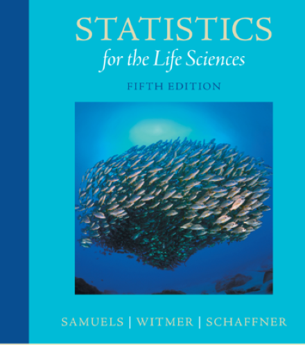
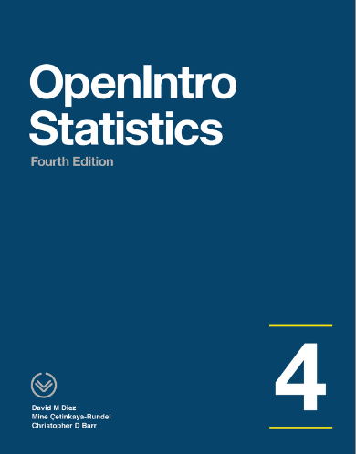
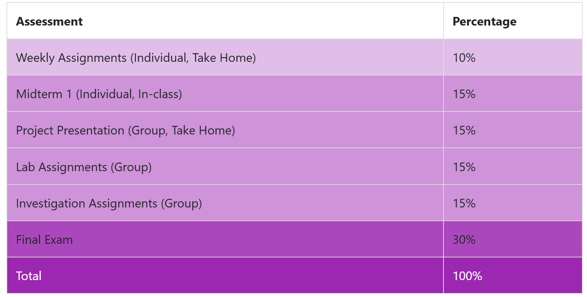

Welcome to STAT 218!
Instructor

Dr. Sinem Demirci (she/her)
025-213
sdemirci@calpoly.edu
Instructor’s office hours:
Mon: 10:15 AM - 12:00 PM (In-Office)
Wed: 10:15 AM - 12:00 PM (on Zoom)
Grader
Chris Liu
cliu119@calpoly.edu
Today’s Menu
In this lecture, I will be briefly talking about
- Syllabus and Course Structure
- What is Life Science?
- What is Statistics?
- Statistics and Life Science
Course Website and Syllabus
We have a course website to organize and manage our course materials.
Schedule
Textbooks


- Where can I get a copy of this book?
- There are few options that I found
- Cal Poly Mustang Shop
- Course Reserves
- Pearson - you can subscribe for 4 months
- Cal Poly Textbook Facebook page: Rumor is that there is such a Facebook page where students sell textbooks at low prices.
- Cal Poly Mustang Shop
- There are few options that I found
Assessment
Weekly Assignments (Individual)
We will have individual weekly assignments, due Mondays at 11:59 PM. These aim to serve two purposes:
Assessing your readiness level before beginning each week’s material; or
Evaluating your understanding of the material covered in the preceding week. You will find them in Canvas.
Exams and Project Presentation
Exams are to be taken in-class without the use of your course notes/ textbook/ assignments/ technological tools. Maybe a calculator.
Project Presentation (Group): You will have the opportunity to present a scientific article related to your major. Details will be given.
- Thu, Nov 13: Project Presentation (will be uploaded online)
Investigations (Group Assignments)
There will be ‘Investigation Sessions’ every Tuesday to be completed (hopefully) within classroom time.
You are encouraged to work in groups on these assignments. Each group should be composed of 2-3 students to work and complete them together both in the class and/or after the class.
It will…
- focus more on a key statistical concept.
- be turned in one write-up with all of your names.
All investigation assignments are due Thursdays by 11:59 pm.
You may work either the same group members or shuffle around.
Lab Assignments
There will be ‘Lab Sessions’ every Thursday to be completed (hopefully) within classroom time.
- Lab sessions will be conducted in groups, and the lab assignments will also be group projects.
- This means that you will submit your lab assignments as a group.
- Each group is composed of 2-3 students to work and complete the labs together both in the class and/or after the class.
- Lab sessions will be conducted in groups, and the lab assignments will also be group projects.
All lab assignments are due Mondays by 11:59 pm.
You may work either the same group members or shuffle around.
Important: Please refrain from including the names of group members who did not participate. In the event of absent students, they must either complete the lab assignment individually or coordinate with their group members to complete it together as a group project.
In brief…
Monday & Wednesday: Lecture-based approach
Tuesday & Thursday: Learn-by-doing approach
A Note on Attendance and Participation
Attendance
I will record attendance during every lecture, not for grading purposes, but to track your learning progress in this class.
- In case of recurring absences, I will reach out to understand the reasons and work together to find solutions.
A Note on Attendance and Participation
Participation
Your active involvement enriches our learning environment and enhances everyone’s experience.
It isn’t about speaking up every day; it’s about actively engaging with the material and activities.
I respect that everyone participates in differently.
In brief, you must be present in our classroom (both physically and mentally) unless you have an “Excusable” Reason for Missing Class
- Please contact with me in advance if you are not coming and do your best to catch up
Frequently Asked Questions
How can I call my professor?
- Dr. Demirci (Dr. Deh-meer-jee)
- Prof. Demirci
- Dr. D.
Why didn’t you answer my email?
I usually respond within 48 hours. If you haven’t heard back…
- Your email might have taken a detour.
- You used a personal email address, and I thought it was a secret agent (from: undercover_hero@gmail.com).
- PLEASE USE YOUR CAL POLY EMAIL ADDRESS AND INCLUDE YOUR NAME AND THE COURSE YOU’RE IN.
- My daughter might have accidentally deleted your email while she was busy saving Arendelle (Yes, I’m a proud Elsa mom—what can I say?).
Please e-mail again after 48 hours.
Is there any study guide for this course?
- Study daily.
- Read the materials before coming to the lecture.
- It’s normal—part of the learning process—not to understand every single sentence.
- Ask questions!
- Come to my office hours (coffee and chocolate might be available).
Can we use AI tools in this course?
- Yes and No. Please read our AI policy very carefully to avoid any unintended consequences.
I have math anxiety (alt text: not a tech-savvy person). What can I do to pass this class?
Looks like we have lots in common :p
I’m designing this course to be more conceptual and less algebraic. You can:
- Mute your inner critic.
- Come and ask for help.
- Believe in yourself.
We can do this together!
What if I ask a stupid question?
There are no stupid questions!
I love seeing the variability in your answers—it helps me understand your learning patterns and improves my lectures.
I track participation, not correctness.
Are you rounding up our grades at the end of the quarter?
Nope! But during the quarter…
- I offer extra credit opportunities.
- I might curve grades if the class average is too low.
I am switching my major. Can you give me a B+?
- REMEMBER! This is your responsibility to study this lecture and get a B+.
I can’t help you in Weeks 7, 8, or 10, or during final weeks.
If you’re switching majors, let me know in advance so I can provide extra office hours or materials to help you maximize your grade.
Why are we using the R Programming Language?
It’s a computer language—every college graduate/researcher/professional should have a basic literacy in the 21st century.
We will NOT learn how to code from scratch.
We’ll learn the nature of the language and modify basic codes by changing dataset names and variable names.
Do we have to shuffle our groups every week?
No, but…
- Sometimes students don’t share the workload equally.
- Some group dynamics might not work.
If you’re happy with your group, feel free to stick together for all investigations and labs.
Can I work individually?
Yes, but…
- It could be overwhelming as tasks are designed for 2-3 people.
- You should learn how to work in a group.
- Let me know if you do not want to work alone but didn’t find any groups.
Life Science and Statistics
What is Life Science?
Give me your own definition, please!
What is Statistics?
How Does Cal Poly Statistics Define Statistics?
- Statistics is the science of collecting, organizing, analyzing and interpreting data using visualizations and models to help others make informed decisions. Statisticians find meaning in the data by looking at representative samples in order to make inferences about the whole. Statistics provides the foundation for data science and is important in many fields as different as retail sales, insurance and scientific research.
Some Other Perspectives for Statistics
The Science of Uncertainty
The study of numbers that helps you understand how likely it is that your last-minute cramming will lead to a passing grade
The magical tool that allows you to make a reasonable guess about the outcome of a lottery based on how many tickets you haven’t bought.
Statistics and Life Science
From The Rise of Statistical Thinking, 1820 - 1900
“Only through their successful application to the refractory but rich problems of the social and biological sciences did the probabilistic techniques of error analysis grow into the powerful and flexible method of analysis that we know as mathematical statistics.” (Porter, 2020, p.4)
“The further development of statistical mathematics was, until the end of the nineteenth century, largely the result of work in other natural and social scientific disciplines.” (p.7)
Sustainable Development Goals

Next Week’s Content
- See the course website for the reading assignment.
References
Porter, T. M. (2020). The Rise of Statistical Thinking, 1820–1900. Princeton University Press. https://doi.org/10.2307/j.ctvxcrz1v